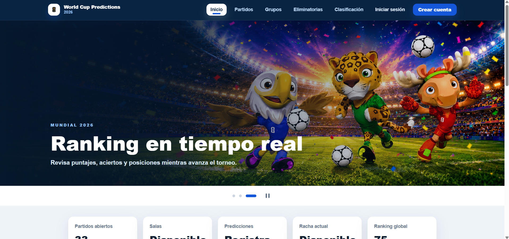

Hola, soy Anderson Ramos
Estudiante de 5to ciclo de Diseño y Desarrollo de Software en TECSUP

Estudiante de 5to ciclo de Diseño y Desarrollo de Software en TECSUP
Estudiante de 5to ciclo de la carrera de Diseño y Desarrollo de Software en TECSUP. Con conocimientos en JavaScript, Kotlin, Node.js, Next.js, NestJS y bases de datos SQL y NoSQL. Con experiencia en el desarrollo de aplicaciones moviles y sistemas web. Actualmente cuento con un nivel de ingles B1 en formacion. Responsable, perseverante y orientado a la resolucion de problemas mediante el analisis y propuesta de soluciones efectivas. Capacidad de aprendizaje continuo, trabajo en equipo y adaptacion a nuevos desafios. Interes en contribuir al desarrollo de soluciones tecnologicas innovadoras que generen valor para las organizaciones y sus usuarios.
Anos de Estudio
Proyectos Academicos


Aplicacion web inspirada en la gamificacion educativa para mejorar la motivacion estudiantil.
Ver mas
Optimizacion del control de inventario y registro de ventas en tiempo real para negocios.
Ver mas
Sistema con IA para gestion de usuarios y generacion de horarios de estudio personalizados.
Ver masEstoy siempre abierto a nuevas oportunidades de aprendizaje y colaboracion en proyectos interesantes. Si tienes alguna duda o propuesta, no dudes en escribirme. Correo personal: ramosimananderson@gmail.com